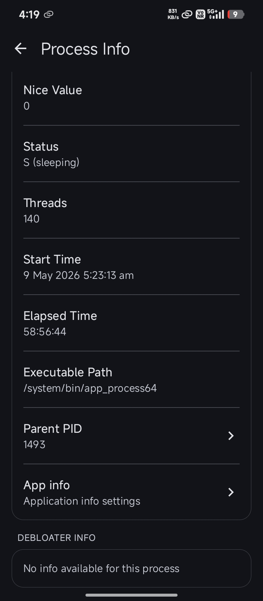

TaskManager 快问快答 — 它到底能帮你看清手机的什么
整理了一份关于 TaskManager 的快问快答：这玩意儿是干嘛的、谁该装、怎么看面板数据、和同类工具比有什么不同，一次说清。
整理一篇关于 TaskManager 的快问快答——这东西在 Android 玩家圈里传了一阵子，但真正上手前还是会有一堆疑问。下面按最常见的问题逐个答，尽量不绕弯。
TaskManager 是什么？
一句话：Android 上的系统资源实时监控工具。它把 CPU、内存、GPU、磁盘、网络、电池六类硬件的实时状态拉成曲线 + 进程列表，让你看到手机此刻到底在跑什么、跑到了什么程度。不像系统自带的"开发者选项里的那个 CPU 指示器"只能看个单核占用，TaskManager 是把整机的资源调度摊开给你看。
核心是它不 root——普通安装就能读到系统的进程信息和硬件传感器数据，这是它和老派 Android 监控工具最大的不同，在TaskManager官网上能找到更完整的功能说明。
谁需要装它？
三类人最实用。一是玩大型手游的玩家——开着 TaskManager 看 GPU 频率和温度曲线，能直接判断是游戏优化差、手机温控压得太狠，还是硬件本身撑不住。二是折腾刷机、刷内核的用户——改完 governor 或调度器，用它看 CPU cluster 的实时频率变化才知道有没有生效。三是怀疑手机被偷偷跑流量、后台有流氓进程的用户——待机时 NET 面板持续有上行速率，基本就能定位到哪个应用在往外传数据。
普通用户也可以装，但如果你的手机用着一切正常，那它就是个"增加知识面"的工具，非必须。
怎么安装？
官方渠道就是网盘分享，从官方下载拿安装包，允许未知来源安装就行。注意版本差异——v1.0.8 是网盘里流传最广的老版本，缺刷新频率滑块和过滤功能；v1.5.x 之后才补上这些设置，还多了英制单位切换和进程项内嵌指标。核心面板功能新旧版没有区别，差的是"顺手程度"。
装完打开直接用，没有账号注册、没有引导流程。Material Design 3 的界面，默认跟随壁纸动态取色，切 Light 或 Dark 主题也在设置里。
六类面板怎么看才对？
最容易看错的是 RAM 面板——很多人看到"已用 90%"就慌，但 Android 的设计哲学是"能用的内存都是好内存"，系统会把常用应用留在缓存里加快下次启动。真正要注意的信号是可用内存持续低于总量的 10% 且应用频繁被杀后台，或者 Swap/ZRAM 使用量持续升高，那才是物理内存不够了。

CPU 面板的进程列表按 CPU 占用降序，RAM 面板则按 PSS（Proportional Set Size）排序——PSS 比 RSS 准确，因为它按比例分摊了共享内存，能反映一个进程的真实独占占用。更多面板的解读细节可以翻TaskManager文档对照着看。GPU 面板除了帧率曲线，下方直接列出 SoC 架构、核心数、OpenGL ES 和 Vulkan 版本——新游戏能不能跑，先看这里的硬件规格够不够。
有什么常见的坑？
最大的坑是刷新频率设得太快——300ms 虽然能捕捉瞬时尖峰，但 TaskManager 自己的 CPU 占用也会跟着升高，变成新的耗电大户。日常用 1 秒默认值完全够，只有测游戏帧率抖动时才拉到最快。
第二个坑是VPN 开着时 NET 面板看不准——流量都走 VPN 隧道了，Wi-Fi 和蜂窝曲线可能显示为 0，这时得看 VPN 那条曲线的速率才对。而且 VPN 显示的是加密后的流量，实际物理速率会更高一些。

还有一个是 SoC 频率看起来"不对劲"——玩游戏时大核应该拉到接近标称频率，如果只有 1.5 GHz 而标称是 2.8 GHz，要么是温控在压，要么是省电模式没关，不是 TaskManager 读错了。
和同类监控工具比怎么样？
和老牌的 CPU-Z、AIDA64 相比，TaskManager 的优势在实时曲线 + 进程列表的组合——CPU-Z 偏重硬件规格一次性展示，AIDA64 偏综合性诊断，而 TaskManager 是挂在后台持续观察的工具。和同类型的 DevCheck 比，TaskManager 的磁盘 IO 和网络速率面板更直观，特别是网络面板把 Wi-Fi、蜂窝、VPN、USB 共享四条链路分开显示，这点 DevCheck 做不到。
另一个隐性优势是不 root——老派的内核级监控工具（比如 Kernel Adiutor 配套的监控模块）需要 root 才能读完整的硬件寄存器，而 TaskManager 通过 Android 公开 API 就能拿到够用的数据，安装门槛低很多。
要不要长期挂着后台？
看场景。日常刷微博、聊微信的时候挂着没必要，它就是个工具，用完关掉更省电。但如果你在测游戏性能、排查网络问题、或者怀疑后台有异常进程，挂着持续观察 10~30 分钟就够拿到有效数据。
省电模式下它会自动降低刷新频率，不会变成耗电大户——除非你手动拉到 300ms 还开着高亮度屏幕盯曲线看。
值不值得装？
如果你在乎手机跑游戏时到底是硬件不行还是温控太狠、想知道待机时谁在偷偷跑流量、或者刷完内核想确认 governor 有没有生效——值得装，而且装完大概率会留在手机上。如果只是好奇"我手机用了多少内存"，看完一次新鲜劲儿过了就会卸载，那装不装无所谓。
最后一句：TaskManager 是那种"用一次可能觉得复杂，但遇到问题时第一个想起来翻它"的工具——适合玩家、折腾党、和对自己手机到底在干嘛有好奇心的人。这套资料同时同步在GitHub、Gitee、GitCode三个仓库里，国内网络选 Gitee 或 GitCode 更顺。